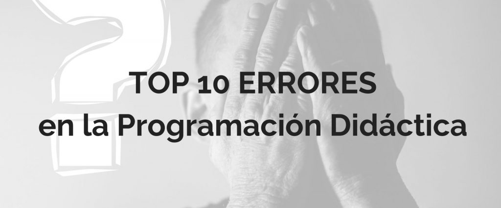

Los 10 errores más comunes en la Programación Didáctica

Cuando entregas la programación al tribunal ya está todo hecho. Has estudiado una lista interminable de temas, te has quebrado la cabeza con los supuestos y has conseguido aprobar. En este punto, sería un palo perder puntos por errores tontos en la programación, ¿no crees? Por eso quiero compartir contigo los 10 errores más comunes que encuentro en las programaciones didácticas. Toma nota y no los repitas.
Evita cometer estos fallos en tu programación didáctica
Falta de coherencia
El primer error básico es la falta de coherencia. Es decir, si leemos toda la programación, hay cosas que no tienen sentido. Por ejemplo, decir que vas a usar la metodología Flipped Classroom, pero que luego no esté reflejada en las actividades. O decir en la temporalización que tu unidad 1 tiene 12 sesiones y luego en el desarrollo de esa misma unidad darle 14 sesiones.
Este error se debe, en gran medida, a una falta de continuidad en la redacción de la programación. ¿A qué me refiero? A que a lo mejor has empezado a elaborar tu programación en octubre y has planteado tu introducción y los objetivos. El mes siguiente haces las competencias. Pero luego no vuelves a tocar la programación hasta mediados de enero. Y cuando quieres ponerte con la evaluación ya estamos en marzo. Han pasado 5 meses desde que empezaste y, como es normal, tienes muchas ideas en la cabeza. Ideas que pueden interferir, confundiéndote. Así que puedes pensar que necesitas evaluar un proyecto, porque lo tienes pensado, pero, en su momento no lo reflejaste en las actividades. O, como te decía antes, al desarrollar las unidades, puede que ya no te acuerdes de cuántas horas le diste en la temporalización y darle otro número distinto.
Estos errores provocan que la programación no tenga sentido y todo el trabajo que has hecho pierde fuelle, simplemente por la falta de coherencia. Para evitarlo, relee tu programación antes de escribir algo nuevo y consulta aquello que necesites cada vez que lo necesites. Si vas a diseñar tus unidades después de haber hecho toda la programación, ten al lado tu temporalización para asegurarte de que las sesiones coinciden. Si vas a plantear tu evaluación, mira las actividades que propusiste. Y así con todo. Asegúrate de que la programación está perfecta, que todo cuadra y no queda ningún cabo suelto.
Copia-pega
Una programación didáctica que no sea original directamente va a tener un cero en las oposiciones (así lo marcan las convocatorias). Así que una programación que sea básicamente copia-pega, también tendrá un cero (o casi).
Además, no es propio de personas adultas que buscan un trabajo fijo presentar un documento plagiado. Si te soy sincera, da una imagen de dejadez que no le querrías transmitir al tribunal. Así que, haz lo siguiente:
- Busca información y copia lo que te convenga en un documento.
- Añade todas las referencias (enlaces, autores, años, etc.).
- Cita correctamente en tu programación algunas ideas destacables, como definiciones de los elementos curriculares o algunas aportaciones pedagógicas.
- Reelabora con tus propias palabras otras ideas, citando también a sus autores.
- Para todo lo demás, redacta tus propias propuestas. Como ya te dije hace unas semanas, busca información para inspirarte, pero no copies. Elabora tus propias ideas, porque solo así serás original.
Una programación didáctica demasiado simple
Este tercer error también transmite una gran desgana. Se trata de programaciones donde, sencillamente, se ha volcado el contenido curricular y se han puesto títulos a los apartados. Aparece algo más de texto, a veces, presentando esos apartados, pero sin aportar ideas propias. Si la programación hablase, diría algo así:
Ey, ¿qué tal? Aquí estoy, estos son los objetivos, por aquí te dejo las competencias, esta es la lista de contenidos que me han dicho que te dé, aquí tienes la metodología y la evaluación. Venga, ¡adiós! 🙂
Son programaciones correctas, pero no aportan nada, porque son un mero reflejo del currículo. La grandeza de la programación didáctica en las oposiciones viene de las ideas propias, de lo que tú propones para ayudar a tu grupo de alumnos a aprender, en un contexto determinado y con unas condiciones determinadas. Por eso no todas las programaciones son iguales, aunque sean de la misma asignatura.
Lo que mejor impresión da de una programación cuando empiezas a leerla es que refleje la personalidad del docente que hay detrás. Eso no lo vas a encontrar en la legislación ni en ninguna parte más que en tu propia cabeza, y solo puede salir de tu teclado. Así que no te quedes con el mínimo. Usa el currículo de base para elaborar tu propia propuesta, siempre reflejando tu personalidad. Eso es lo que marcará la diferencia.
Mucha paja pero falta el contenido curricular
Aunque te pueda parecer mentira, hay programaciones que son muy fáciles de leer, porque van fluidas: presentan la información poco a poco, ordenadamente, con referencias a autores, con ideas propias, con coherencia…
En el otro extremo están las programaciones que meten mucha paja. Suelen explicar varias veces lo mismo y mezclar unas ideas con otras. Esto provoca que el lector se haga un lío y al final haya que leer varias veces para intentar entender lo que quieren decir. Si a eso le sumas que pasan las páginas pero no se avanza, la sensación de pesadez va en aumento. Y el problema llega a su clímax cuando termina la programación y hay contenido curricular que falta. Totalmente desaparecido.
En primer lugar, quiero que te pongas en la piel del tribunal: julio, calor (en algunas comunidades mucho calor desde por la mañana temprano), una programación tras otra, un día tras otro,… ¿Crees que les gustará más leer una programación fluida o una «a trompicones»?
Si les das una programación de lectura fluida y que se entiende perfectamente a la primera vas a causar una mejor impresión que si les das paja. Además, si cumples con todos los criterios que te han marcado, la nota será buena, seguro. En cambio, si falta contenido curricular te van a quitar puntos, porque no estás cumpliendo con lo estipulado.
Medidas de atención a la diversidad indiscriminadas
Enlazando con la falta de coherencia, encontramos las medidas de atención a la diversidad para todas las personas que hay en el mundo, en lugar de para el grupo-clase.
En la atención a la diversidad tienes que plantear medidas para atender las necesidades educativas de tus alumnos. Por tanto, si en el contexto presentaste un alumno con hipoacusia y otro con altas capacidades, solo debes plantear medidas para ellos. De nada sirven medidas para alumnos con discapacidad visual si en tu grupo no hay ninguno. Sencillamente porque esas medidas no se van a aplicar.
En segundo lugar, debes atender también a los diferentes ritmos de aprendizaje, y esto sí que lo va a haber siempre en todas las clases.
Puntuación
Comas donde deben ir puntos. Comas en lugar de dos puntos, o de punto y coma. Puntos donde deberían ir comas… Y sobre todo, comas después de sujeto. Son errores básicos que te van a quitar puntos y que son muy fáciles de solucionar, simplemente, repasando las normas de puntuación.
Tildes
Otro de los criterios que los tribunales tienen en cuenta y por los que te van a quitar puntos. Y también es muy habitual ver tildes que faltan o que sobran. Al igual que en el apartado anterior, la solución es sencillas: repasar las normas de acentuación.
Comillas
La mayoría de programaciones didácticas contienen citas y es un error común colocar el punto final dentro de las comillas de esta manera .»
El problema de esta fórmula es que deja la frase sin punto final. Imagina que en un cruce no ponemos un stop: desastre. La manera correcta de escribir una cita es cerrar comillas y luego poner el punto. Lo vemos en un ejemplo con una frase de Concepción Arenal:
«El saber no parece obligatorio sino al que sabe ya».
Falta de concordancia
Es una falta de coherencia lingüística. Siempre deben concordar en género y número el sujeto y el complemento. Te suena, ¿verdad?
Vigila que en tu programación no se cuelen frases como «los alumnos/as» en lugar de los/as alumnos/as; «se propone varias metodologías» en lugar de se proponen, etc.
Al escribir mientras pensamos rápido es normal cometer errores. Por eso debes releer la programación con calma y fijándote en todos estos aspectos. Luego, corrige hasta dejarla perfecta.
Frases muy largas
Como tenemos tantas ideas en la cabeza y necesitamos llenar muchas páginas (y a veces nos falta espacio), solemos recurrir a frases muy largas. A menudo es involuntario y cuando lo escribes, para ti tiene todo el sentido, porque tú tienes la información en la cabeza y sabes lo que quieres decir. El problema es que el tribunal no te va a leer la mente; solo leerá tu programación. Es por ello que debes presentarle las ideas de manera clara. Como ya sabrás, en Vírgula defendemos la fórmula «una frase, una idea».
Evita frases de más de 3 líneas. Evita oraciones con más de un sujeto. Y sobre todo, no mezcles ideas. Cuando lo tengas, pásale tu programación a algún amigo o familiar y pídele sinceridad. Si se ha enterado de todo, habrás hecho un buen trabajo. Si le ha costado leer y entenderte, aún queda trabajo por hacer.
La solución para una programación didáctica correcta
Puedes anotarte este top 10 de errores comunes en la programación y, por supuesto, leer bien la convocatoria y los criterios del tribunal (cuando estén disponibles). Impríme estos últimos o anótalos y tenlos siempre presentes.
Además, puedes consultar la RAE o la Fundéu para escribir correctamente, ya que son aspectos que también se tienen en cuenta.
Por último, asegúrate de que tu programación sea coherente, que no haya copia-pega, ni sea demasiado simple, así como de no meter paja y atender solo a la diversidad de tu grupo. Con eso podrás asegurarte una buena nota.
Pero si lo prefieres, yo puedo hacer este trabajo por ti con la Corrección de la Programación Didáctica y de las Unidades.
Pide ahora tu corrección